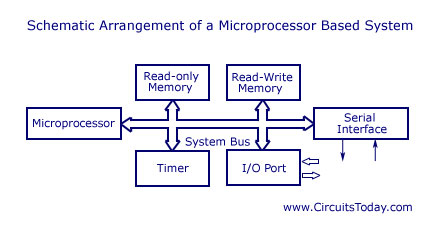

DATE:7-JAN-2020 XCLASS FIRST LECTURE:
MICROPROCESSORS & APPLICATIONS:
Course No:CS619
Microprocessor is a contorl unit
central unit implement single chip---Von Architecture:
4 operational units in single chip main computing components--thats mean Microprocessor
BOOK-- MICROPROCESSOR & PROGRAMMED LOGIC BY K.L Short
MICROPROCESSOR:[µp]
The Controlling unit of a microcomputer laid out on a tiny silicon chip and containaing the logical elements for handling data,performing calculation and caring out stored instructions etc.It is Aa VLSI circuit that perform ALU operation.(ALU perform indata and instructions Computer System)
Conceptually without memory is computer but not capability stored data and instruction.
Memory add because reuse in data and instruction.
Related Subjects:
- Computer Architecture & Organization
- Logic Design & Switching
- Assembvly Language...etc
INDEX:
- General Introduction
- LDST principals
- Microprocessor Architecture & Operation
- Data Transfer,Logic Operation & Branching
- Program Assembly & Testing
- The Stack & Subroutines
- Computer Arthmetic
- Programmed Controlled I/O
- Interrupts & DMA
Microprocessor
Other devices used microprocessor .Contolling devices control so working in Microprocessor:
APPLICATIONS OF MICROPROCESSOR:
- Car
- Door Controlling
- Washing Machine,Air Conditioner...ETC
@pplications of microprocessor ##link
DIAGRAM--Generalized Microprocessor Based System:

Input Operations Perform:
Output Operations Perform:
Computer System:
consists of a number of subsystems interconnected by paths that transfer data between the subsystems.
CPU:
controls the operation of the computer system by executing a sequence of instructions.
These instructions stored in computer .Constitute the program that the computer executes.This Structure is also refered as stored program structure.
What operations a microprocessor perform?
-Control unit is a clock sequential machine
-It controls all data transfers, that includes transfer of instruction from memory to CPU.(fetching of instruction).
-It also decodes instruction & carries out operation specified.Transformation of data
take place in ALU.